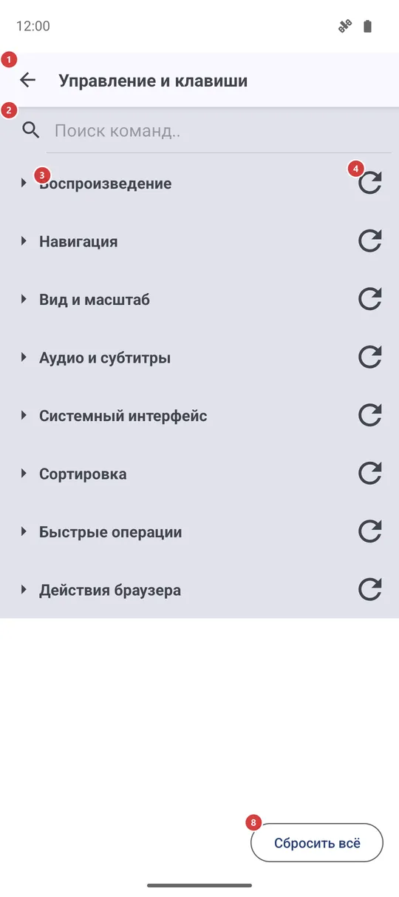
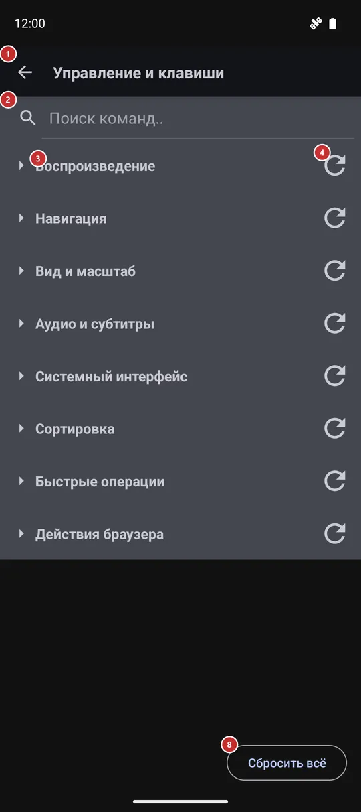

Управление и клавиши
Для чего этот экран
Выберите, какая клавиша, кнопка геймпада или кнопка мыши запускает каждую команду - воспроизведение, навигацию, сортировку и просмотр. У каждой команды есть стандартная клавиша, поэтому вы меняете только то, что хотите, и в любой момент можете вернуть всё как было.


Порядок действий
- Откройте «Управление и клавиши» в настройках, на вкладке «Управление». Команды сгруппированы по назначению, и группы сначала свёрнуты.
- Найдите команду: введите часть её названия в поле поиска 2 или нажмите заголовок группы 3, чтобы раскрыть её.
- Нажмите «Редактировать назначение» 6 в строке команды 5 и выберите устройство, у которого хотите сменить клавишу, - клавиатуру, геймпад и так далее.
- Откроется окно 9 и будет ждать. Нажмите новую клавишу или кнопку, пока идёт отсчёт 10, и проверьте, что захвачено 11.
- Если красное сообщение говорит, что клавиша занята 12, нажмите другую или «Отмена» 13. Иначе нажмите «Назначить» 14, чтобы сохранить.
- Чтобы вернуть стандартную клавишу, используйте сброс в строке 7 для одной команды, сброс группы 4 для целой группы или «Сбросить всё» 8 для всех сразу. Два последних сначала спрашивают.
- Изменения сохраняются сразу. Кнопка «Назад» 1 закрывает экран.
Элементы
Верхняя панель и поиск
1НазадЗакрывает экран и возвращает в настройки.
Подтверждать нечего: каждое изменение сохраняется сразу, как только вы его делаете.
2Поиск команд..Оставляет в списке только подходящие команды.
Введите часть названия команды, например «Следующий файл», или часть названия клавиши, и список сужается прямо при вводе. Группа без совпадений исчезает. Свёрнутая группа с совпадением показывает только заголовок, поэтому нажмите на неё, чтобы увидеть подходящие строки. Очистите поле, чтобы вернуть всё.
Группы и команды
3Группы командСворачивает и разворачивает команды одной группы.
Команды сгруппированы по назначению: «Воспроизведение», «Навигация», «Вид и масштаб», «Аудио и субтитры», «Системный интерфейс», «Сортировка», «Быстрые операции», «Действия браузера» и - только в сборках с поддержкой VR - «Только VR». Группы сначала свёрнуты; нажмите заголовок, чтобы открыть группу. Приложение помнит, какие группы вы оставили открытыми. В широком окне строки идут в два столбца.
4Сброс группыВозвращает одной группе стандартные клавиши.
Это маленький значок с круглой стрелкой в конце заголовка группы. Приложение спрашивает, сбросить ли все назначения в этой группе до заводских, и ничего не меняет, пока вы не нажмёте «Сбросить». Затрагиваются только клавиши, которые вы изменили в этой группе.
- Отмена
- Ваши клавиши в этой группе пропадают, а стандартные возвращаются. Чтобы вернуть свою клавишу, назначьте её снова через «Редактировать назначение».
5Строка командыКоманда и клавиши, которые её запускают.
Сверху - название команды. Под ним - её текущие клавиши, каждая с пометкой устройства: клавиатура, геймпад, мышь или VR; прочерк значит, что клавиша не задана. У одной команды могут быть клавиши сразу на нескольких устройствах, так что кнопка геймпада и клавиша клавиатуры могут делать одно и то же.
6Редактировать назначениеНазначает команде новую клавишу или кнопку.
Небольшое меню спрашивает, для какого устройства менять. «Клавиатура» и «Геймпад» есть всегда, каждое с текущей клавишей или «(не задано)»; «Мышь» и VR появляются, только если у команды уже есть для них клавиша. После выбора открывается окно захвата клавиши. Новая клавиша заменяет прежнюю для этого устройства.
7Сбросить к стандартнымВозвращает одной команде стандартную клавишу.
Работает только для команды, которую вы меняли; у нетронутой команды кнопка приглушена. Сброс выполняется сразу, без вопроса.
- Отмена
- Ваша клавиша для этой команды пропадает, возвращается стандартная. Если хотите вернуть свою, назначьте её снова через «Редактировать назначение».
Сбросить всё
8Сбросить всёВозвращает всем командам стандартные клавиши.
Приложение спрашивает «Сбросить все назначения до заводских? Это нельзя отменить.» и ничего не меняет, пока вы не нажмёте «Сбросить». После этого каждая команда использует свои исходные кнопки клавиатуры, геймпада и мыши.
- Отмена
- Все ваши клавиши пропадают разом, и вернуть их нельзя. Назначайте их заново по одной.
Окно захвата клавиши
9Нажмите клавишу или кнопку..Сообщает, что приложение ждёт вашу клавишу.
Окно закрывает экран и ждёт клавишу клавиатуры (вместе с Ctrl, Shift или Alt, если вы их держите), кнопку геймпада, отклонение стика, триггера или крестовины либо кнопку мыши. Системная клавиша «Назад» новой клавишей не считается.
10Отсчёт времениПоказывает, сколько секунд осталось на нажатие.
У вас есть 30 секунд. Когда время выйдет, окно закроется само, и ничего не изменится.
11Захваченная клавишаПоказывает клавишу или кнопку, которую поймало приложение.
Здесь написано «Захвачено:» и название того, что вы нажали, например Ctrl+Shift+K для клавиши клавиатуры с модификаторами. Пока вы ничего не нажали, виден прочерк. Если первое нажатие было не тем, нажмите другую клавишу - учитывается последняя.
12Сообщение о конфликтеПредупреждает, что другая команда уже использует эту клавишу.
Красная строка «Уже назначено:» и названия этих команд. Пока она видна, кнопка «Назначить» не работает, поэтому две команды не могут делить одну клавишу. Нажмите другую клавишу либо отмените и сначала освободите другую команду.
13ОтменаЗакрывает окно, ничего не меняя.
Команда сохраняет прежнюю клавишу. Подходит, если вы открыли окно по ошибке или нужная клавиша уже занята.
14НазначитьСохраняет пойманную клавишу для этой команды.
Кнопка работает только после того, как клавиша поймана и ею не пользуется другая команда. Она сразу сохраняет клавишу, закрывает окно и обновляет строку.